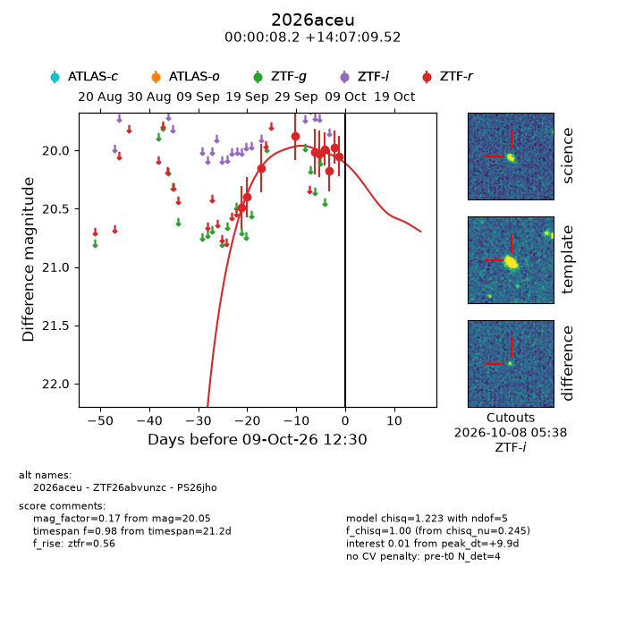
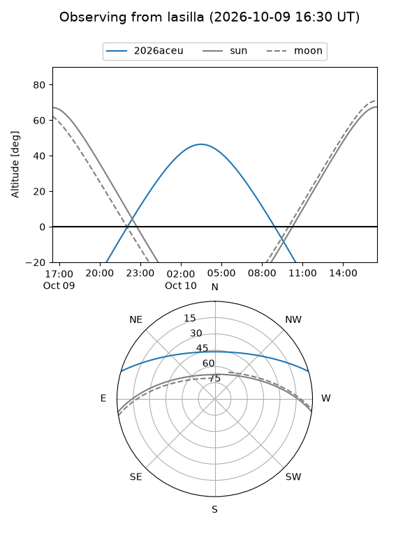
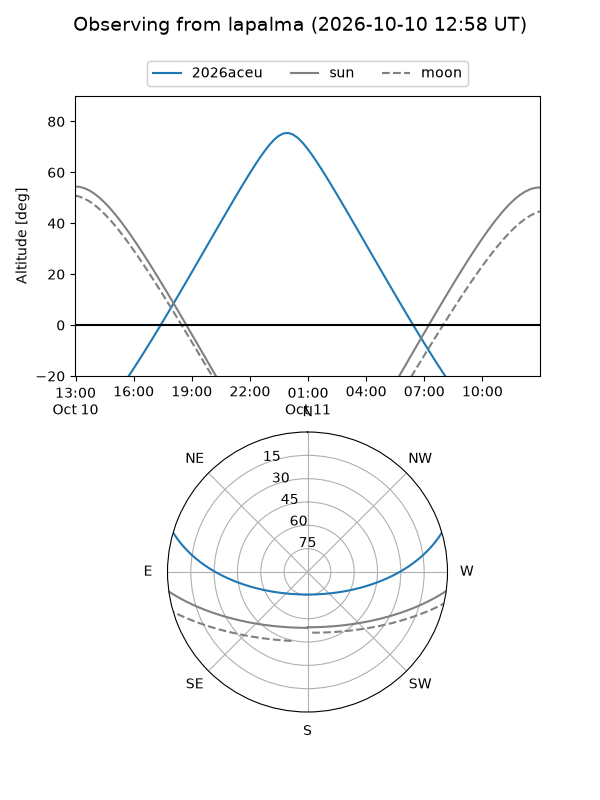
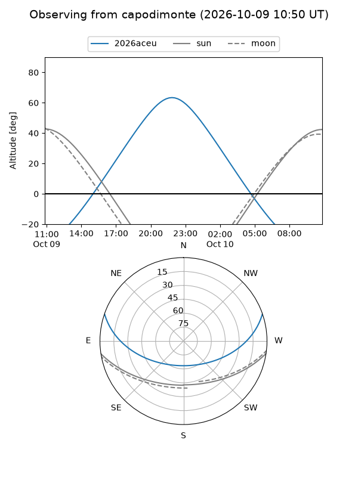
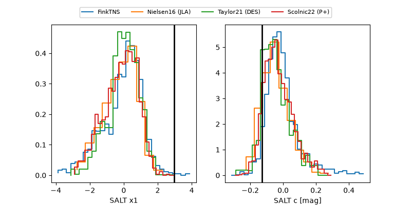

2026aceu
Target 2026aceu at 2026-10-09 12:32
Aliases and brokers:
FINK-ZTF: ztf.fink-portal.org/ZTF26abvunzc
Lasair-ZTF: lasair-ztf.lsst.ac.uk/objects/ZTF26abvunzc
ALeRCE-ZTF: alerce.online/object/ZTF26abvunzc
YSE-PZ: ziggy.ucolick.org/yse/transient_detail/2026aceu
TNS name: wis-tns.org/object/2026aceu
Direct TNS query: direct search
alt names
ZTF26abvunzc (ztf,fink_ztf)
2026aceu (tns,yse)
PS26jho (panstarrs)
Coordinates:
equatorial (ra, dec) = 0.0340,+14.11931
equatorial (HMS+DMS) = 00:00:08.17,+14:07:09.52
galactic (l, b) = (104.5621,-46.91442)
Flags:
peak dt: +9.9
Photometry:
last ztfr=20.05
10 ztfr detections
Lightcurve

Visibility



Additional plots
